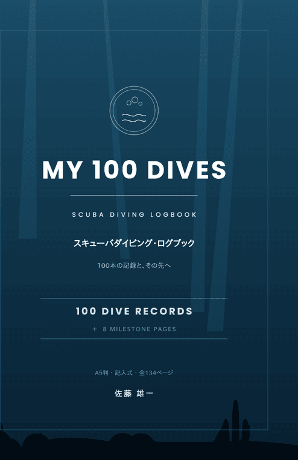

MY 100 DIVES | A Scuba Diving Logbook for Your First 100 Dives
MY 100 DIVES is a fill-in scuba diving logbook with one page per dive. Each page has room for the details you want to keep after a dive, and every number field shows both metric and imperial units, so you can write in the units you use.
In short: 100 one-page dive logs, 8 milestone pages, and checklists in one 6 x 9 in paperback, written in English.

MY 100 DIVES: Scuba Diving Logbook - Record Your First 100 Dives and Beyond
Date, dive site, location, dive center or boat, guide and buddy, time in and out, bottom time, surface interval, maximum and average depth, water and air temperature, tank and start/end pressure, weight, exposure suit, visibility, current, dive style, marine life, notes, and a signature from your guide or instructor — one page per dive, for 100 dives.
📖 English edition on Amazon.com — $9.99$9.99 is the Amazon.com price; prices in other Amazon stores may differ. The cover shown is the Japanese edition; the English edition has its own cover.
Who is this for?
- Divers starting out who want to keep a record of each dive in one book
- Divers who log in feet and psi, in meters and bar, or switch between the two when traveling
- Anyone who wants to mark milestones such as their 10th, 50th, or 100th dive
- Anyone who wants to write down the marine life and places they have seen
What's inside
| Section | Details |
|---|---|
| Dive log pages | 100 pages, one per dive, plus a filled-in sample page |
| Units | Depth, temperature, pressure, weight, tank, and visibility fields show both units (m / ft, bar / psi, °C / °F, kg / lb, L / cu ft). A unit conversion page is included |
| Milestone pages | 8 pages, after dives 1, 10, 25, 40, 50, 60, 75, and 100 |
| 100 Dives Chart | A chart to color in as you go |
| About you | Diver profile, emergency contacts, certifications, training goals |
| Equipment | Equipment list and maintenance log |
| Checklists and lists | Marine life checklist, scenes and experiences checklist, places you have dived, dive regions of the world |
| At the back | Personal records, a wish list for your next 100 dives, safety notes, memo pages |
Japanese Edition
The book was first published in Japanese. The Japanese edition (A5, 134 pages) is written in Japanese and has a marine life checklist in Japanese and English. The English edition was rebuilt for divers outside Japan, with both units on every number field and a unit conversion page.
📖 Japanese edition on Amazon.co.jp — ¥1,628
Japanese page: MY 100 DIVES (Japanese)
FAQ
Q. How many dives can I log in this book?
A. 100 dives, one page per dive, plus a filled-in sample page. There are also 8 milestone pages, after dives 1, 10, 25, 40, 50, 60, 75, and 100.
Q. Can I write in metric or imperial units?
A. Either. The depth, temperature, pressure, weight, tank, and visibility fields show both units (m / ft, bar / psi, °C / °F, kg / lb, L / cu ft), and a unit conversion page is included.
Q. Can I use it as a record of my dives for training?
A. Each log page has room for the details commonly kept in a dive log, plus a signature line for your guide or instructor. Whether a dive center or training agency accepts it as a record of your experience is up to them, so please check with them.
Q. Is this logbook affiliated with a diver training agency?
A. No. It is not affiliated with any diver training agency, and it is not a substitute for dive training or medical advice.
Q. Is there an e-book edition?
A. No. It is a printed paperback (6 x 9 in, 134 pages) that you write in by hand.
Keep your next dives in one book
One page per dive, in the units you use, with milestone pages along the way.
📖 English edition on Amazon.com — $9.99